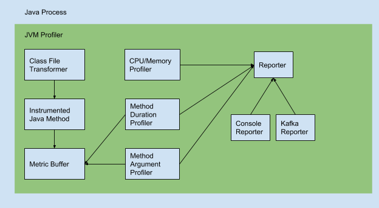

Uber JVM Profiler
背景
见uber链接：https://eng.uber.com/jvm-profiler/，2021/10/15.
功能
Java Agent的方式分布式收集Hadoop/Spark的度量指标和堆栈跟踪，通用的JVM性能分析gent。
- executor的内存使用，包括Java堆内存，非堆内存，本地内存（VmRSS, VmHWM），内存池和缓冲池（directed/mapped buffer）；
- executor的CPU使用率和GC信息；
- 任意Java类方法（运行次数，运行时间）；
- 调试任意java类方法调用并跟踪它的参数值；
- ClientNamenodeProtocolTranslatorPB.getBlockLocations 或 addBlock 计算读取/写入的文件
- 堆栈分析，生成Spark应用的CPU时间的火焰图；
- 调试IO指标（应用的磁盘读/写字节，CPU的iowait）。
Uber JVM Profiler还提供了高级的分析功能，可以跟踪用户代码上的任意Java方法和参数，而不需要用户更改代码。此特性可用于跟踪每个Spark应用程序的HDFS namenode调用延迟，并确定名称节点的瓶颈。它还可以跟踪每个Spark应用程序读取或写入的HDFS文件路径，并识别热文件以便进一步优化。

使用
默认的输出有ConsoleOutputReporter，FileOutputReporter 和 KafkaOutputReporter。
maven编译的时候可以指定profile，支持 RedisOutputReporter 和 InfluxDBOutputReporter 。
Spark使用
--conf spark.jars=hdfs://hdfs_url/lib/jvm-profiler-1.0.0.jar
--conf spark.executor.extraJavaOptions=-javaagent:jvm-profiler-1.0.0.jar
Java使用
指定Main类
java -javaagent:jvm-profiler-1.0.0.jar=reporter=com.uber.profiling.reporters.ConsoleOutputReporter,tag=mytag,metricInterval=5000,durationProfiling=com.uber.profiling.examples.HelloWorldApplication.publicSleepMethod,argumentProfiling=com.uber.profiling.examples.HelloWorldApplication.publicSleepMethod.1,sampleInterval=100 -cp target/jvm-profiler-1.0.0.jar com.uber.profiling.examples.HelloWorldApplication
可执行的jar包
java -javaagent:/opt/jvm-profiler/target/jvm-profiler-1.0.0.jar=reporter=com.uber.profiling.reporters.ConsoleOutputReporter,metricInterval=5000,durationProfiling=foo.bar.FooAppication.barMethod,sampleInterval=5000 -jar foo-application.jar
Spring Boot Maven
mvn spring-boot:run -Dspring-boot.run.jvmArguments="-javaagent:/opt/jvm-profiler/target/jvm-profiler-1.0.0.jar=reporter=com.uber.profiling.reporters.ConsoleOutputReporter,metricInterval=5000,durationProfiling=foo.bar.FooController.barMethod,sampleInterval=5000"
参数
-javaagent:agent_jar_file.jar=param1=value1,param2=value2
- reporter：结果输出的类，如
com.uber.profiling.reporters.ConsoleOutputReporter； - configProvider：配置提供类，如
com.uber.profiling.YamlConfigProvider； - configFile：配置文件路径，本地文件或者HTTP路径；
- tag：plain text string which will be reported together with the metrics.
- metricInterval：收集metrics的间隔时间
- durationProfiling：分析特定的类和方法，支持通配符，如
com.uber.profiling.examples.HelloWorldApplication.publicSleepMethod； - argumentProfiling：分析特定的方法参数，如
com.uber.profiling.examples.HelloWorldApplication.publicSleepMethod.1； - sampleInterval：堆栈采样的频率（毫秒)，0表示禁用；
- ioProfiling：是否分析IO指标，true或false；
- brokerList：KafkaOutputReporter的broker list；
- topicPrefix：KafkaOutputReporter的topic前缀；
- outputDir：FileOutputReporter的输出路径
堆栈的火焰图
开启sampleInterval
python stackcollapse.py -i Stacktrace.json > Stacktrace.folded
flamegraph.pl Stacktrace.folded > Stacktrace.svg
指标
1. CPU和内存
| Name | Description | Sample Value | Note |
|---|---|---|---|
| time | 时间戳（用于grafana database） | 1582504748538000000 | 时间戳 |
| appId | Application id of the job that is running. | application_1576797426048_311346 | 使用Yarn，则是Yarn App Id |
| bufferPools-direct-count | Total number of direct byte buffers used at the recorded time. | 55 | Depending on your application, this can be a smaller number |
| bufferPools-direct-memoryUsed | Total memory of the direct byte buffers used in bytes. | 18950 | An estimate. This value should be very similar to the total capacity for a healthy JVM. |
| bufferPools-direct-name | Name of the buffer pool. | direct | Direct buffer pools are always named direct. |
| bufferPools-direct-totalCapacity | Available capacity in bytes in the direct buffer pool. | 18949 | Capacity should be similar to memoryUsed for a healthy JVM. |
| bufferPools-mapped-count | Total number of mapped byte buffers used at the recorded time. | 0 | In general, spark applications will not require mapped buffer pools. |
| bufferPools-mapped-memoryUsed | Total memory of the mapped byte buffers used in bytes. | 0 | An estimate. This value should be very similar to the total capacity for a healthy JVM. |
| bufferPools-mapped-name | Name of the buffer pool. | mapped | Mapped buffer pools are always named mapped. |
| bufferPools-mapped-totalCapacity | Available capacity in bytes in the mapped buffer pool. | 0 | Capacity should be similar to memoryUsed for a healthy JVM. |
| epochMillis | System time in milliseconds when this value was recorded. | 1582504781508 | |
| gc-PSMarkSweep-collectionCount | Total number of collections that have occurred for PS MarkSweep. | 7 | -1 if collection count is undefined for this collector. |
| gc-PSMarkSweep-collectionTime | approximate accumulated collection elapsed time in milliseconds. | 914 | -1 if collection count is undefined for this collector. |
| gc-PSMarkSweep-name | Name of the collector. | PS MarkSweep | Constant value. |
| gc-PSScavenge-collectionCount | Total number of collections that have occurred for PS Scavenge. | 25 | -1 if collection count is undefined for this collector. |
| gc-PSScavenge-collectionTime | approximate accumulated collection elapsed time in milliseconds. | 1206 | -1 if collection count is undefined for this collector. |
| gc-PSScavenge-name | Name of the collector. | PS Scavenge | Constant value. |
| heapMemoryCommitted | Amount of memory in bytes guaranteed for the JVM to use. | 375914496 | |
| heapMemoryMax | Max amount of memory in bytes that can be used | 11453595648 | Also refer to spark.memory.fraction for the fraction managed by spark |
| heapMemoryTotalUsed | Total heap memory used in bytes | 86386032 | Total memory used should be less than committed and max heap memory. |
| host | Hostname of the executor | uber-bigdata-datanode2.uber.com | |
| memoryPools-CodeCache-name | Name of the code cache. | Code Cache | Constant value. |
| memoryPools-CodeCache-peakUsageCommitted | Peak committed memory of this pool since the JVM was started | 2555904 | |
| memoryPools-CodeCache-peakUsageMax | Peak value of usageMax of this pool since the JVM was started | 251658240 | |
| memoryPools-CodeCache-peakUsageUsed | Peak value of memory of this pool used since the JVM was started. | 582656 | |
| memoryPools-CodeCache-type | The type of this memory pool. | Non-heap memory | Code cache is a non-heap memory. So this value will always be constant. |
| memoryPools-CodeCache-usageCommitted | Total memory in bytes committed for this pool. | 2555904 | |
| memoryPools-CodeCache-usageMax | The maximum amount of memory that can be used by this pool. | 251658240 | -1 if undefined. Not guaranteed to be available if greater than the committed memory. |
| memoryPools-CodeCache-usageUsed | Amount of memory used by this pool. | 582656 | Having some code cache memory free ensures it is usable for JIT compilation. |
| memoryPools-CompressedClassSpace-name | Name of the compressed class space. | Compressed Class Space | Is constant. This space is allocated in native memory for class metadata. |
| memoryPools-CompressedClassSpace-peakUsageCommitted | Peak committed memory of this pool since JVM was started. | 1572864 | |
| memoryPools-CompressedClassSpace-peakUsageMax | Peak value of usageMax of this pool since the JVM was started. | 1073741824 | |
| memoryPools-CompressedClassSpace-peakUsageUsed | Peak value of usage of this pool since the JVM was started. | 1389800 | |
| memoryPools-CompressedClassSpace-type | Type of memory of this memory pool. | Non-heap memory | Compressed class space is native memory but is managed by the JVM |
| memoryPools-CompressedClassSpace-usageCommitted | Total memory in bytes committed for this pool. | 1572864 | |
| memoryPools-CompressedClassSpace-usageMax | The maximum amount of memory that can be used by this pool | 1073741824 | -1 if undefined. Not guaranteed to be available if greater than the committed memory. |
| memoryPools-CompressedClassSpace-usageUsed | Amount of memory used by this pool. | 1389800 | |
| memoryPools-Metaspace-name | Name of the Metaspace. | Metaspace | Is constant. Metaspace is always called metaspace. |
| memoryPools-Metaspace-peakUsageCommitted | Peak committed memory of this pool since JVM was started. | 12320768 | |
| memoryPools-Metaspace-peakUsageMax | Peak value of usageMax of this pool since the JVM was started. | -1 | -1 if undefined. |
| memoryPools-Metaspace-peakUsageUsed | Peak value of usage of this pool since the JVM was started. | 11768752 | |
| memoryPools-Metaspace-type | Type of memory of this memory pool. | Non-heap memory | Metaspace is native memory (since JDK 8) but is managed by the JVM |
| memoryPools-Metaspace-usageCommitted | Total memory in bytes committed for this pool. | 12320768 | |
| memoryPools-Metaspace-usageMax | The maximum amount of memory that can be used by this pool | -1 | -1 if undefined. Not guaranteed to be available if greater than the committed memory. |
| memoryPools-Metaspace-usageUsed | Amount of memory used by this pool. | 11768752 | The amount of space used by loaded classes. |
| memoryPools-PSEdenSpace-name | Name of the young generation heap space. | PS Eden Space | Is constant. PS Eden space is always called PS Eden Space. |
| memoryPools-PSEdenSpace-peakUsageCommitted | Peak committed memory of this pool since JVM was started. | 98041856 | |
| memoryPools-PSEdenSpace-peakUsageMax | Peak value of usageMax of this pool since the JVM was started. | 4262461440 | -1 if undefined. |
| memoryPools-PSEdenSpace-peakUsageUsed | Peak value of usage of this pool since the JVM was started. | 92270136 | |
| memoryPools-PSEdenSpace-type | Type of memory of this memory pool. | Heap memory | PS Eden space is a portion of the heap memory that is managed by the JVM |
| memoryPools-PSEdenSpace-usageCommitted | Total memory in bytes committed for this pool. | 98041856 | |
| memoryPools-PSEdenSpace-usageMax | The maximum amount of memory that can be used by this pool | 8589934592 | -1 if undefined. Not guaranteed to be available if greater than the committed memory. |
| memoryPools-PSEdenSpace-usageUsed | Amount of memory used by this pool (and by newly loaded classes). | 92270136 | A continuously increasing value indicates an unhealthy garbage collection. |
| memoryPools-PSOldGen-name | Name of the old generation heap space. | PS Old Gen | Is constant. PS Old Gen space is always called PS Old Gen. |
| memoryPools-PSOldGen-peakUsageCommitted | Peak committed memory of this pool since JVM was started. | 261619712 | |
| memoryPools-PSOldGen-peakUsageMax | Peak value of usageMax of this pool since the JVM was started. | 8589934592 | -1 if undefined. |
| memoryPools-PSOldGen-peakUsageUsed | Peak value of usage of this pool since the JVM was started. | 0 | |
| memoryPools-PSOldGen-type | Type of memory of this memory pool. | Heap memory | PS Old Gen space is a portion of the heap memory that is managed by the JVM |
| memoryPools-PSOldGen-usageCommitted | Total memory in bytes committed for this pool. | 261619712 | |
| memoryPools-PSOldGen-usageMax | The maximum amount of memory that can be used by this pool | 8589934592 | -1 if undefined. Not guaranteed to be available if greater than the committed memory. |
| memoryPools-PSOldGen-usageUsed | Amount of memory used by this pool (by objects beyond threshold). | 0 | A continuously increasing value indicates an unhealthy garbage collection. |
| memoryPools-PSSurvivorSpace-name | Name of the survivor heap space. | PS Survivor Space | Is constant. PS Survivor Space is always called PS Survivor Space. |
| memoryPools-PSSurvivorSpace-peakUsageCommitted | Peak committed memory of this pool since JVM was started. | 16252928 | |
| memoryPools-PSSurvivorSpace-peakUsageMax | Peak value of usageMax of this pool since the JVM was started. | 16252928 | -1 if undefined. |
| memoryPools-PSSurvivorSpace-peakUsageUsed | Peak value of usage of this pool since the JVM was started. | 0 | |
| memoryPools-PSSurvivorSpace-type | Type of memory of this memory pool. | Heap memory | PS Survivor Space is a portion of the heap memory that is managed by the JVM |
| memoryPools-PSSurvivorSpace-usageCommitted | Total memory in bytes committed for this pool. | 16252928 | |
| memoryPools-PSSurvivorSpace-usageMax | The maximum amount of memory that can be used by this pool | 16252928 | -1 if undefined. Not guaranteed to be available if greater than the committed memory. |
| memoryPools-PSSurvivorSpace-usageUsed | Amount of memory used by this pool (and by newly loaded classes). | 0 | A continuously increasing value indicates an unhealthy garbage collection. |
| name | Process name (number) | 12345@uber-bigdata-datanode2.uber.com | Also contains host name. |
| nonHeapMemoryCommitted | Amount of non heap memory in bytes committed for the JVM to use. | 16187392 | Total of committed of all non-heap memory pools. |
| nonHeapMemoryMax | Maximum amount of memory in bytes that can be used. | -1 | -1 if undefined. |
| nonHeapMemoryTotalUsed | Amount of non heap memory (metaspace, code cache) used. | 13510368 | Total of usage of all non-heap memory pools. |
| processCpuLoad | The recent cpu usage for the JVM process. | 4.335671366438364e-9 | |
| processCpuTime | CPU time used by JVM process in nanoseconds. | 2340000000 | |
| processUuid | UUID of the JVM process. | 48abf05b-dfd4-4069-86c6-8cdbc195bd40 | |
| processUuid_1 | UUID of the JVM process. | 48abf05b-dfd4-4069-86c6-8cdbc195bd40 | Appears to be a duplicate metric. |
| role | Role of this spark executor. | executor | Can be either executor or driver. |
| systemCpuLoad | The recent cpu usage for the whole system. | 0.03703887412577616 | |
| vmHWM | Peak resident set size ("High Water Mark") in bytes for the JVM. | 142876672 | 表示JVM在linux中实际使用的物理内存(RAM)。 |
| vmPeak | Peak of the virtual memory usage in bytes for the JVM. | 15130554368 | JVM虚拟内存使用的峰值 |
| vmRSS | JVM physical memory usage (resident set size) in bytes. | 142876672 | 应用程序正在使用的物理内存的大小，就是用ps命令的参数rss的值 (rss) |
| vmSize | Virtual memory size for the JVM. | 15130550272 | This memory includes swap space, so a large value can imply high swap memory usage. |
2. IO
| Name | Description | Sample Value | Notes |
|---|---|---|---|
| time | Time series value for grafana database. | 1582504713009000000 | |
| appId | Application id for the job that is running. | application_1576797426048_311346 | If using yarn, this is the yarn application id. |
| epochMillis | System time in milliseconds when this value was recorded. | 1582504713001 | |
| host | Hostname of the executor. | uber-bigdata-datanode2.uber.com | |
| name | Process name (number). | 12345@uber-bigdata-datanode2.uber.com | Includes the hostname as well. |
| processUuid | UUID of the JVM process. | 89a256c7-96c3-4e48-b5ba-f55e886ba743 | |
| processUuid_1 | UUID of the JVM process. | 89a256c7-96c3-4e48-b5ba-f55e886ba743 | Appears to be a duplicate metric. |
| role | Role of this spark executor. | executor | Can be either executor or driver. |
| self-io-rchar-1 | The number of characters read by this JVM process. | 8192340 | The "-1" is coming from the formatter for influx which was used when writting this. |
| self-io-read_bytes-1 | Attempt to count the bytes read by this JVM process from storage. | 1892352 | |
| self-io-wchar-1 | The number of characters written to disk by this JVM process. | 51016 | |
| self-io-write_bytes-1 | Attempt to count the bytes written by JVM process to storage. | 86016 | |
| stat-cpu-N | CPU entry found in /proc//stat. | cpu, cpu0, cpu1, cpu2 ... | N is the CPU number starting at cpu-1 (i.e. cpu) which aggregates all other CPU lines. |
| stat-idle-N | Time the N-th CPU spent in the idle task. | 53679018 | Time is in USER_HZ (1/100th of a second). |
| stat-iowait-N | Time spent by N-th CPU waiting for I/O to complete. | 137645010 | |
| stat-nice-N | Time spent by N-th CPU in user mode with low priority (nice). | 104 | Low idle time with high nice time are indications of busy background tasks running. |
| stat-system-N | Time spent by N-th CPU in system mode. | 32700364 | Time spent at kernel level. |
| stat-user-N | Time spent by N-th CPU at the user (application) level | 279816973 |
3. Process Info
| Name | Description | Sample Value | Notes |
|---|---|---|---|
| time | Time series value for grafana database. | 1582504713009000000 | |
| agentVersion | A constant value defined in code. | 1.0.0 | Agent version will always be 1.0.0. |
| appId | Application id for the job that is running. | application_1576797426048_311346 | If using yarn, this is the yarn application id. |
| cmdline | Contains JVM command executed and input arguments and classpath. | /usr/jdk64/jdk1.8.0_112/bin/java -javaagent... | |
| epochMillis | System time in milliseconds when this value was recorded. | 1582504713001 | |
| host | Hostname of the executor. | uber-bigdata-datanode2.uber.com | |
| jvmClassPath | Contains JVM classpath entries. | --user-class-path .../jvm-profiler-1.0.0.jar | This entry is emtpy if cmdLine is not empty. This is to avoid duplicate information. |
| jvmInputArguments | Contains JVM input arguments. | metricInterval=5000,sampleInterval=5000 ... | This entry is emtpy if cmdLine is not empty. This is to avoid duplicate information. |
| name | Process name (number). | 12345@uber-bigdata-datanode2.uber.com | Includes the hostname as well. |
| processUuid | UUID of the JVM process. | 89a256c7-96c3-4e48-b5ba-f55e886ba743 | |
| processUuid_1 | UUID of the JVM process. | 89a256c7-96c3-4e48-b5ba-f55e886ba743 | Appears to be a duplicate metric. |
| role | Role of this spark executor. | executor | Can be either executor or driver. |
| xmxBytes | Maximum JVM heap size in bytes. | 12884901888 |
4. Stack Trace
| Name | Description | Sample Value | Notes |
|---|---|---|---|
| time | Time series value for grafana database. | 1582504713009000000 | |
| appId | Application id for the job that is running. | application_1576797426048_311346 | If using yarn, this is the yarn application id. |
| count | Number of elements appended to the metrics buffer. | 1 | This value is usually 1, but not guaranteed to be constant. It is thread-safe. |
| endEpoch | System time in milliseconds after resetting the metrics buffer. | 1582504712723 | The metrics buffer is an internal buffer used by this profiling application. |
| host | Hostname of the executor. | uber-bigdata-datanode2.uber.com | |
| name | Process name (number). | 12345@uber-bigdata-datanode2.uber.com | Includes the hostname as well. |
| processUuid | UUID of the JVM process. | 89a256c7-96c3-4e48-b5ba-f55e886ba743 | |
| processUuid_1 | UUID of the JVM process. | 89a256c7-96c3-4e48-b5ba-f55e886ba743 | Appears to be a duplicate metric. |
| role | Role of this spark executor. | executor | Can be either executor or driver. |
| stacktrace | Stacktrace starting from bottom of the stacktrace. | java.lang.Object.wait,java.lang.ref ... | Trims the top method (most nested method) if the size is too large (800k characters) |
| startEpoch | System time in milliseconds before resetting the metrics buffer. | 1582504710523 | The metrics buffer is an internal buffer used by this profiling application. |
| threadName | Name of the thread for which stacktrace is displayed. | Signal Dispatcher | |
| threadState | State of the thread when this stacktrace was captured. | NEW, RUNNABLE, BLOCKED, WAITING ... |
5. Thread Info
| Name | Description | Sample Value | Notes |
|---|---|---|---|
| time | Time series value for grafana database. | 1582504713009000000 | |
| epochMillis | System time in milliseconds when this value was recorded. | 1582504781508 | |
| host | Hostname of the executor. | uber-bigdata-datanode2.uber.com | |
| name | Process name (number). | 12345@uber-bigdata-datanode2.uber.com | Includes the hostname as well. |
| appId | Application id for the job that is running. | application_1576797426048_311346 | If using yarn, this is the yarn application id. |
| processUuid | UUID of the JVM process. | 89a256c7-96c3-4e48-b5ba-f55e886ba743 | |
| role | Role of this spark executor. | executor | Can be either executor or driver. |
| totalStartedThreadCount | Total Number of Thread created so far since JVm Launch. | 10 | |
| liveThreadCount | Number of thread which are currently active. | 8 | |
| newThreadCount | Number of thread which are newly Created. | 3 | Derived from last Cycle Total Threads. |
| peakThreadCount | the peak live thread count since the JVM start | 8 |